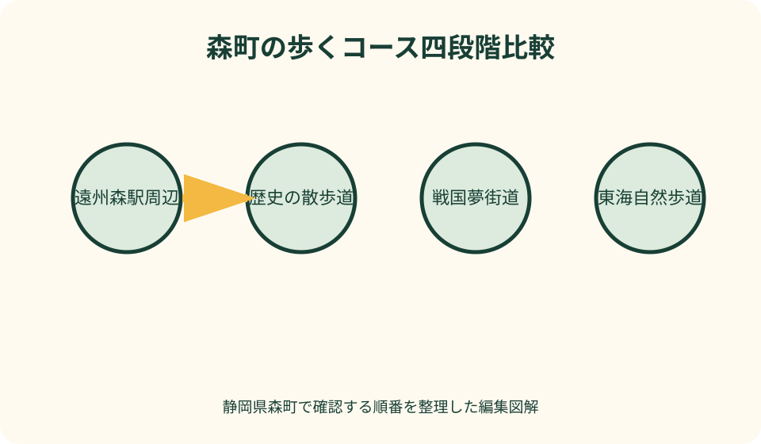
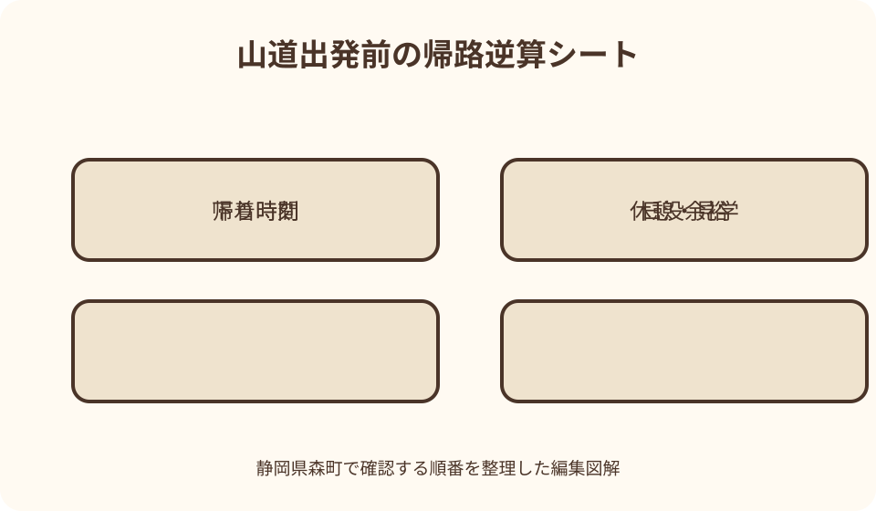

ハイキング・ウォーキング｜最終確認 2026-08-10
静岡県森町のハイキング・ウォーキング｜町歩きと山道の選び方
静岡県森町の『歩くコース』には、遠州森駅周辺の町歩きから、蓮華寺と大洞院を結ぶ歴史の散歩道、三倉の戦国夢街道、大日山金剛院と春埜山大光寺を結ぶ東海自然歩道まで、大きな幅があります。観光案内にウォーキングと書かれていても、未舗装、坂、登山口までの移動、通行止め、熊やヤマビル、通信の条件は同じではありません。距離の短さではなく、戻り方まで含めて一つを選びます。

編集イラスト最初に町歩きと山道を分ける
森町でウォーキングを検索すると、市街地の散策、寺社間の里山道、山間の古道、自然歩道が同時に出ます。名称だけで同じ装備・時間の活動にまとめません。
町歩きは舗装路が中心でも、車の往来、歩道のない区間、寺社の階段、営業中の休憩場所を確認します。普段着で無計画に歩けるという意味ではありません。
歴史の散歩道は蓮華寺と大洞院をつなぐ約7.3キロメートル・公式目安約2時間30分のコースですが、寺院見学や休憩、道迷い確認は別に見込みます。
戦国夢街道には観光協会が約8.5、5.5、4.1キロメートルの複数コースを案内しています。短い数字を平坦・容易の印とは読みません。
東海自然歩道の森町区間は大日山金剛院から春埜山大光寺を結ぶ約4.5キロメートルです。山間の起終点へどう着き、どう戻るかが歩行距離と同じほど重要です。
初心者は遠州森駅周辺から組む
初めてなら遠州森駅を起点に、町なかの寺社、古い町並み、営業を確認した店や文化施設を一、二か所選び、同じ駅へ戻る小さな輪を作ります。
町歩きの利点は、距離を伸ばさず休憩先や鉄道へ戻りやすいことです。ただし、列車の時刻を固定せず当日に天浜線公式で往復を確認します。
観光協会のサイクリング用町並みコースは広域の地点整理に役立ちますが、表示距離と所要時間は自転車向けです。その数字を徒歩計画へ転載しません。
駅から離れる前に、トイレ、飲料、昼食、雨天退避、帰りの時刻を確保します。店や施設が必ず開いている前提で水分・休憩を任せません。
歩き足りなければ現地で山道へ追加するのではなく、町なかの往復区間を少し延ばします。装備なしの即興入山を初心者向け代案にしません。
距離に高低差と路面を重ねる
コースのキロ数は平面上の長さです。同じ五キロでも、舗装路、土道、石段、根の張った斜面、濡れた落葉では必要な時間と疲労が変わります。
公式地図に標高点や等高線があれば、最高点だけでなく、細かな上り返しを見ます。登って下る一回の山と決めつけません。
高低差の数値が見つからない場合は、地形図とコース説明を確認し、不明のまま平坦と扱いません。観光窓口へ路面と坂の状態を聞きます。
所要時間は目安であり、写真、参拝、分岐確認、休憩を含むかは資料ごとに異なります。日没や帰りの交通へ余白を加えます。
子ども、高齢者、膝や足首に不安のある人と歩く日は、最も速い人ではなく、下りに時間がかかる人を基準に往復可能な範囲へ縮めます。

登山口・終点・帰路を一枚にする
戦国夢街道の案内には三倉一ノ瀬バス停付近と駐車場の情報があります。『駐車場有』だけで台数、利用時間、満車時の代替まで確定したとは考えません。
東海自然歩道は金剛院と大光寺を結ぶ線形です。片道を歩いた後、車へ戻る交通を現地で探す計画は避け、往復・送迎・撤退方法を出発前に決めます。
登山口へ向かう山間道路が通れるか、森町の林道規制、県の道路規制、現地標識を管理者別に確かめます。徒歩可能と車両進入可を混同しません。
私有地、寺院駐車場、路肩を登山者用駐車場と推測しません。公式に指定された場所が確認できなければ、観光協会や施設へ問い合わせます。
起点と終点を地図へ保存し、分岐番号、引返し地点、日没前の退出時刻を紙にも写します。目的地のピン一つだけでは帰路を管理できません。
町民の森は利用規制を最優先する
町民の森のウォーキングマップには、南・北ゲートの約2キロメートルコースと約5キロメートルの一周例が掲載されています。これは平常時の案内です。
一方、森町は地すべりに伴い、南北ゲートを封鎖して町民の森全体を規制する告知を掲載しています。本稿確認時は再開を自己判断しません。
古い地図や観光写真が検索上位にあっても、最新の利用規制を上書きしません。再開を示す町公式の更新が確認できるまで訪問候補から外します。
歴史の散歩道と町民の森が交差する案内があっても、閉鎖区域を接続路や近道として通りません。規制図とゲートの指示を優先します。
代案は、閉鎖地点の近くで別の山道を探すことではありません。遠州森駅周辺の町歩きか、開館・利用可能を確認した施設へ切り替えます。
戦国夢街道は三コースを比較する
戦国夢街道は三倉地区の古道を歩くコースで、塩の道、三丸、半命という複数の距離が公式に示されています。名前だけで分岐を選びません。
各コースについて、同じ登山口へ戻るのか、途中で公道へ出るのか、分岐標識はどう示されるのかをパンフレットと観光協会へ確認します。
歴史解説を読む時間、茶畑や集落を通る際のマナー、道路横断を計画へ含めます。古道だから車両や生活者がいないとは限りません。
駐車場が満車、登山口を特定できない、案内板と手元の地図が一致しない場合は出発しません。別の分岐から合流しようとしないことが重要です。
伝説や合戦の舞台を味わうコースでも、史跡らしき場所を探してルート外へ入りません。歴史情報と現在の通行可能範囲を分けて歩きます。

東海自然歩道は短距離の山道と考える
観光協会が案内する森町管内の東海自然歩道は約4.5キロメートルですが、杉並木の山間コースです。距離の短さを散歩靴でよい根拠にしません。
大日山金剛院と春埜山大光寺の双方について、参拝・駐車の可否、道路、トイレ、開門等を各運営者の最新情報で確認します。
観光協会ページはヤマビルへの注意を明記しています。森町公式の北部ハイキング向け服装・持ち物も読み、季節と雨後の条件を加えます。
樹林内は町なかより暗く感じ、濡れた根や落葉が路面を隠します。展望写真を見られるという期待より、足元と引返し時刻を優先します。
片道縦走が成立しない場合は、無理に往復へ変換しません。高低差と帰りの余力を観光窓口へ確認できなければ、別日に回します。
天気は出発地・山間部・帰路で見る
遠州森駅周辺が晴れていても、三倉や山の上が同じ天候とは限りません。気象庁の予報に加え、雨雲、雷、警報を目的地周辺まで広げて見ます。
前日の雨は、当日の土道、沢、落葉、ヤマビルの条件へ残ることがあります。当日が晴れ予報という一点で路面が乾いたと決めません。
雷活動がある日は、展望点や尾根へ向かわず、施設・町の案内に従います。雷が見えるまで歩くという独自の中止線は設けません。
夏は暑さ、冬は日没と路面、強風時は枝や倒木を考えます。季節ごとの数値基準を本記事から固定せず、気象庁と管理者の発表へ戻ります。
帰路側の天候も見て、雨雲が到着する前に登頂する計画ではなく、十分前に車・駅へ戻る計画へ変更します。予測にはずれがある前提を残します。
熊・ヤマビル・野生動物情報を確認
入山前に森町の有害鳥獣ページと静岡県の当年度目撃情報を確認します。過去記事を今日の目撃へ変えず、掲載がないことも不在の証明にしません。
町は山に入る際、単独行動を避け、鈴やラジオ等で存在を知らせ、食べ物やごみを管理する案内を掲載しています。最新版を出発前に読みます。
音を出す道具を持つことは、入山の許可証ではありません。直近情報、施設規制、沢音や風、同行者、退出条件に不安があれば中止します。
北部コースではヤマビル対策として、森町公式が服装、忌避剤等、足元の確認を案内しています。対処法は元ページを読み、必要に応じ医療機関へ相談します。
野生動物や痕跡らしきものを撮るため追跡・接近・脇道進入をしません。目撃時は安全な場所へ離れ、町が示す連絡先へ情報を伝えます。
靴・水・地図・通信をコース別に用意
町歩きでも履き慣れた靴を選び、山道では滑りにくさ、足首、路面、天候に合う靴を検討します。新品を当日初めて長距離で使いません。
水は途中で必ず補給できると仮定せず、所要時間、気温、同行者に合わせて準備します。町民の森の『森の泉』は飲用できないと公式案内にあります。
紙のコース図、方位を確認できる道具、充電済み端末、モバイルバッテリー、連絡先を分散して持ちます。地図アプリ一台へ全員が依存しません。
救急用品、雨具、防寒・日よけは、山道の季節と個人に合わせます。持ち物を増やしたため歩行時間が延びる点も計画へ入れます。
圏外や電池切れを異常事態ではなく想定条件にします。地図を読めない、分岐を説明できない場合は、通信圏内の町歩きを選びます。
撤退地点と時刻を出発前に決める
山頂や終点へ着く時刻ではなく、駐車場・駅へ戻る時刻を先に決めます。そこから休憩、見学、下りの遅れを引いて引返し時刻を設定します。
分岐を一つ見落とした、案内板が倒れている、地図と地形が一致しないときは、進んで次の標識を探さず、分かる地点まで戻ります。
同行者の疲労、靴ずれ、暑さ、冷え、雨、雷、動物情報、通行止めのいずれかが計画を変えたら、到達目標を下げます。
車を別の終点へ回す担当者と連絡が取れない場合、歩行を開始しません。送迎が来るだろうという期待で線形コースへ入らないようにします。
撤退は失敗ではありません。途中の寺社や景観を一つ見て戻る計画を最初から持てば、完歩へのこだわりを小さくできます。
初心者向け三段階の代案
第一段階は遠州森駅周辺の短い往復です。駅、町なかの見どころ、営業確認した休憩先の三点に絞り、暗くなる前に駅へ戻ります。
第二段階は、車や公共交通から遠く離れない公認の短い散策です。利用可能、起終点、路面、トイレを管理者へ確認できた場所だけを選びます。
第三段階で歴史の散歩道、戦国夢街道、東海自然歩道を検討します。距離を段階の基準にせず、山道経験と帰路確保を条件にします。
初心者同士だけで不安なら、観光ボランティアや公的に案内されたガイドの有無を観光協会へ尋ねます。非公式な同行者募集へ安易に個人情報を渡しません。
町民の森の利用規制中は段階から外します。再開後も地図、ゲート、規制区域、コース状態が更新されているか確認してから候補へ戻します。
練習として町なかを歩く日も、使った靴で足が痛くならないか、水をどの程度携行できるか、紙地図と現在地を照合できるかを確かめます。山道の日だけ新しい手順を一度に試さない準備ができます。
良い点
森町公式は、歴史の散歩道、町民の森ウォーキングマップ、北部のヤマビル注意、利用規制を別ページで示しており、魅力と現況を両方確認できます。
森町観光協会は戦国夢街道の三コースを距離別に示し、三倉一ノ瀬バス停付近という起点情報と駐車場の有無を掲載しています。
東海自然歩道は起終点と約4.5キロメートルの区間、ヤマビル注意が明記され、山間コースとして追加確認すべき点を把握できます。
町歩き、里山の歴史道、山間の自然歩道という異なる選択肢があるため、天候や経験に応じて一日を短く組み替えやすいのが森町の良さです。
注文したい点
各コースに累積標高差、路面構成、急坂、分岐番号、携帯通信の目安、引返し地点が統一形式で示されると、距離だけの比較を避けやすくなります。
登山口駐車場について、位置、台数、利用時間、トイレ、満車時の扱いを地図へまとめれば、路肩や寺院区画への誤駐車を減らせます。
観光協会の魅力紹介から、町の林道・施設通行止め、熊、ヤマビル、防災ページへ常設リンクがあれば、古いパンフレットだけで出発しにくくなります。
線形コースには、公共交通・タクシーの当日予約可否を断定せず、帰路をどこへ問い合わせるか明記すると、終点で移動手段を失う問題を防げます。
閉鎖ページには再確認日と代替の町歩き案、再開時には解除範囲と更新地図が示されると、利用者がゲートまで確かめに行かずに済みます。
代案・結論
結論は、町歩きと山道を分け、距離、高低差、路面、起終点、帰路、規制、天気、動物、装備、撤退の十項目を一コースごとに確認することです。
初訪問は遠州森駅周辺の短い町歩きにし、次回に歴史の散歩道、戦国夢街道、東海自然歩道のどれか一つを準備して歩く二段構えが現実的です。
町民の森は公式の利用規制が掲載されているため、古いウォーキングマップを根拠に入りません。町が再開範囲を明示した後に改めて計画します。
当日に通行止め、雷、直近の動物情報、送迎不能、地図不一致が判明したら、町なかへ変更するか帰ります。未確認の隣コースへ横滑りしません。
大石の視点
私は、コース紹介の所要時間より先に、車・駅へ戻る方法を見ます。終点で帰れない歩行計画は、景色が良くても完成していません。
森町は短い距離の中に町並み、寺社、里山、深い山道が続きます。その近さが、装備を変えずに山へ入れるという錯覚も生みます。
通行止めは残念な情報ではなく、計画を変えるための価値ある情報です。ゲートの向こうを少し見るために、管理者の判断を試しません。
歴史を味わうなら、完歩数や速度を競うより、案内板と現在地を確かめ、地域の生活道を静かに通るほうが森町に合っています。
一日に一コース、分からなければ町歩き、引返しても一つ見られれば十分。この余白が、天気や体調の変化にも耐える実用的な旅になります。
公式情報・確認先
掲載内容は次の一次情報を基礎に整理しました。営業、料金、催し、交通は変わるため、出発前または手続き前にリンク先で最新情報を確認してください。
- 観光（静岡県森町、2026-08-10確認）
- 歴史の散歩道（静岡県森町、2026-08-10確認）
- 町民の森 ウォーキングマップ（静岡県森町、2026-08-10確認）
- 町民の森 施設の利用規制について（静岡県森町、2026-08-10確認）
- 北部ハイキングコースにおけるヤマビル被害の注意について（静岡県森町、2026-08-10確認）
- クマの出没対策について（静岡県森町、2026-08-10確認）
- 戦国夢街道ハイキングコース（静岡県森町観光協会、2026-08-10確認）
- 東海自然歩道（静岡県森町観光協会、2026-08-10確認）